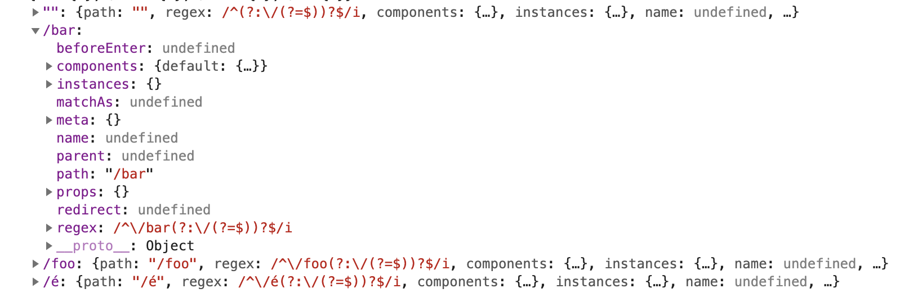

因为本人开发中使用的是VUE技术栈，最近也是开始源码的学习，以此记录个人理解，若行文有误，请多多指教。
1.new Router和install
在vue中我们使用vue-router时需要先进行new Router()，执行new Router()后主要执行代码看看VueRouter class定义的constructor方法。
1 | constructor (options: RouterOptions = {}) { |
从代码里面我们可以看到在new的时候确定了使用何种路由模式，并且根据传入options创建matcher。
接下来看看当使用vue.use()执行install方法做了什么：
1 | export function install (Vue) { |
install方法里主要是Vue.mixin给每个组件混入了beforeCreate和 destroyed 方法，在Vue的原型链上增加了$router和$route对象，这就是为什么我们使用Vue的时候在this上可以拿到这两个对象，注册了router-view和router-link两个组件。
2. matcher和route
接下来看看matcher的定义：
1 | export type Matcher = { |
matcher暴露了match方法addRoutes方法，从方法的名字上看，match方法是用于路由匹配，addRoutes则是用来添加路由配置。
在执行creatMatcher()里第一代段代码生成了pathList、pathMap、nameMap这三个对象，这是后面路由执行匹配非常重要的配置。
1 | const { pathList, pathMap, nameMap } = createRouteMap(routes) |
pathMap和nameMap分别是以route配置的path和name为key生成的一个映射表，对应value为RouteRecord实例。
下面看看RouteRecord的定义：
1 | declare type RouteRecord = { |
结合代码里的实际数据对照理解各个属性的含义：

| key | value |
|---|---|
| path | 传入的路径值 |
| regex | 根据path生成的正则匹配规则 |
| components | path对应的组件 |
| instances | 执行路由守卫方法时传入的route实例 |
| name | route的name |
| parent | route的父级，是一个递归的对象，从最底层一直到最顶层，无则为undefined |
| redirect | 重定向的路径 |
| matchAs | 用于匹配alias |
| props | 传入路由的参数 |
结合以上解释，我们可以得出vue-router一个大概的运行概念。
执行
new Router()生成路由配置对象routedRecord路由匹配根据
route对象的regex进行匹配根据
route的parent对象递归获取component组件生成render Tree执行各组件对应的导航守卫方法
此文大概简述了vue-router是如何执行的，但是对于router跳转的具体执行并没有进行深入解释，下一篇文章将会详细说明router跳转之后是如何执行。
- 本文链接：https://welldeng.github.io/2019/06/07/%E5%AD%A6%E4%B9%A0vue-router%E6%BA%90%E7%A0%81%E8%AE%B0%E5%BD%95/
- 版权声明：本博客所有文章除特别声明外，均默认采用 许可协议。
若没有本文 Issue，您可以使用 Comment 模版新建。